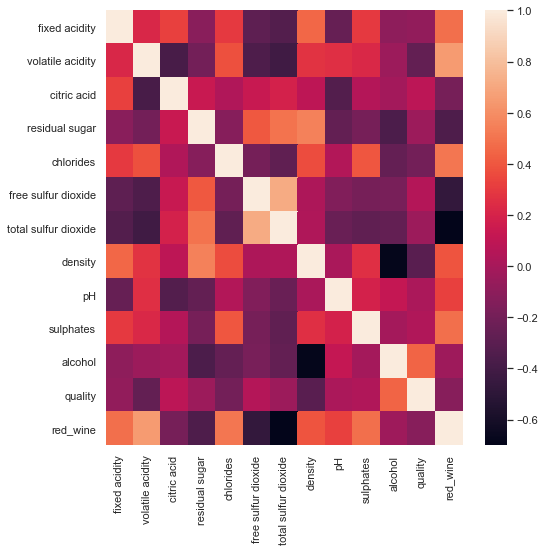
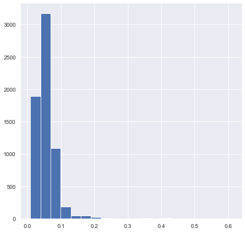
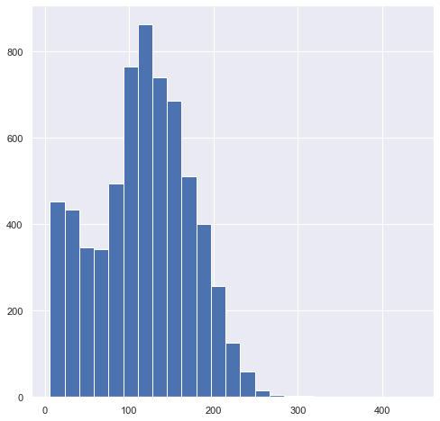

Feature Selection and Feature Engineering#
import pandas as pd
import seaborn as sns
from matplotlib import pyplot as plt
from sklearn.linear_model import LinearRegression
from sklearn.feature_selection import RFE
from sklearn.preprocessing import PolynomialFeatures, StandardScaler
Agenda#
SWBAT:
Use correlations and other algorithms to inform feature selection;
Address the problem of multicollinearity in regression problems;
Create new features for use in modeling;
Use PolynomialFeatures to build compound features
[022221FT] Model Selection#
Let’s imagine that I’m going to try to predict wine quality based on the other features.
Now: Which columns (predictors) should I choose? There are 12 predictors I could choose from. For each of these predictors, I could either use it or not use it in my model, which means that there are 2^12 = 4096 different models I could construct! Well, okay, one of these is the “empty model” with no predictors in it. But there are still 4095 models from which I can choose.
How can I decide which predictors to use in my model?
We’ll explore a few methods here.
wine = pd.read_csv('data/wine.csv')
wine.head(10)
| fixed acidity | volatile acidity | citric acid | residual sugar | chlorides | free sulfur dioxide | total sulfur dioxide | density | pH | sulphates | alcohol | quality | red_wine | |
|---|---|---|---|---|---|---|---|---|---|---|---|---|---|
| 0 | 7.4 | 0.70 | 0.00 | 1.9 | 0.076 | 11.0 | 34.0 | 0.9978 | 3.51 | 0.56 | 9.4 | 5 | 1 |
| 1 | 7.8 | 0.88 | 0.00 | 2.6 | 0.098 | 25.0 | 67.0 | 0.9968 | 3.20 | 0.68 | 9.8 | 5 | 1 |
| 2 | 7.8 | 0.76 | 0.04 | 2.3 | 0.092 | 15.0 | 54.0 | 0.9970 | 3.26 | 0.65 | 9.8 | 5 | 1 |
| 3 | 11.2 | 0.28 | 0.56 | 1.9 | 0.075 | 17.0 | 60.0 | 0.9980 | 3.16 | 0.58 | 9.8 | 6 | 1 |
| 4 | 7.4 | 0.70 | 0.00 | 1.9 | 0.076 | 11.0 | 34.0 | 0.9978 | 3.51 | 0.56 | 9.4 | 5 | 1 |
| 5 | 7.4 | 0.66 | 0.00 | 1.8 | 0.075 | 13.0 | 40.0 | 0.9978 | 3.51 | 0.56 | 9.4 | 5 | 1 |
| 6 | 7.9 | 0.60 | 0.06 | 1.6 | 0.069 | 15.0 | 59.0 | 0.9964 | 3.30 | 0.46 | 9.4 | 5 | 1 |
| 7 | 7.3 | 0.65 | 0.00 | 1.2 | 0.065 | 15.0 | 21.0 | 0.9946 | 3.39 | 0.47 | 10.0 | 7 | 1 |
| 8 | 7.8 | 0.58 | 0.02 | 2.0 | 0.073 | 9.0 | 18.0 | 0.9968 | 3.36 | 0.57 | 9.5 | 7 | 1 |
| 9 | 7.5 | 0.50 | 0.36 | 6.1 | 0.071 | 17.0 | 102.0 | 0.9978 | 3.35 | 0.80 | 10.5 | 5 | 1 |
Correlation#
# Use the .corr() DataFrame method to find out about the
# correlation values between all pairs of variables!
wine.corr()
| fixed acidity | volatile acidity | citric acid | residual sugar | chlorides | free sulfur dioxide | total sulfur dioxide | density | pH | sulphates | alcohol | quality | red_wine | |
|---|---|---|---|---|---|---|---|---|---|---|---|---|---|
| fixed acidity | 1.000000 | 0.219008 | 0.324436 | -0.111981 | 0.298195 | -0.282735 | -0.329054 | 0.458910 | -0.252700 | 0.299568 | -0.095452 | -0.076743 | 0.486740 |
| volatile acidity | 0.219008 | 1.000000 | -0.377981 | -0.196011 | 0.377124 | -0.352557 | -0.414476 | 0.271296 | 0.261454 | 0.225984 | -0.037640 | -0.265699 | 0.653036 |
| citric acid | 0.324436 | -0.377981 | 1.000000 | 0.142451 | 0.038998 | 0.133126 | 0.195242 | 0.096154 | -0.329808 | 0.056197 | -0.010493 | 0.085532 | -0.187397 |
| residual sugar | -0.111981 | -0.196011 | 0.142451 | 1.000000 | -0.128940 | 0.402871 | 0.495482 | 0.552517 | -0.267320 | -0.185927 | -0.359415 | -0.036980 | -0.348821 |
| chlorides | 0.298195 | 0.377124 | 0.038998 | -0.128940 | 1.000000 | -0.195045 | -0.279630 | 0.362615 | 0.044708 | 0.395593 | -0.256916 | -0.200666 | 0.512678 |
| free sulfur dioxide | -0.282735 | -0.352557 | 0.133126 | 0.402871 | -0.195045 | 1.000000 | 0.720934 | 0.025717 | -0.145854 | -0.188457 | -0.179838 | 0.055463 | -0.471644 |
| total sulfur dioxide | -0.329054 | -0.414476 | 0.195242 | 0.495482 | -0.279630 | 0.720934 | 1.000000 | 0.032395 | -0.238413 | -0.275727 | -0.265740 | -0.041385 | -0.700357 |
| density | 0.458910 | 0.271296 | 0.096154 | 0.552517 | 0.362615 | 0.025717 | 0.032395 | 1.000000 | 0.011686 | 0.259478 | -0.686745 | -0.305858 | 0.390645 |
| pH | -0.252700 | 0.261454 | -0.329808 | -0.267320 | 0.044708 | -0.145854 | -0.238413 | 0.011686 | 1.000000 | 0.192123 | 0.121248 | 0.019506 | 0.329129 |
| sulphates | 0.299568 | 0.225984 | 0.056197 | -0.185927 | 0.395593 | -0.188457 | -0.275727 | 0.259478 | 0.192123 | 1.000000 | -0.003029 | 0.038485 | 0.487218 |
| alcohol | -0.095452 | -0.037640 | -0.010493 | -0.359415 | -0.256916 | -0.179838 | -0.265740 | -0.686745 | 0.121248 | -0.003029 | 1.000000 | 0.444319 | -0.032970 |
| quality | -0.076743 | -0.265699 | 0.085532 | -0.036980 | -0.200666 | 0.055463 | -0.041385 | -0.305858 | 0.019506 | 0.038485 | 0.444319 | 1.000000 | -0.119323 |
| red_wine | 0.486740 | 0.653036 | -0.187397 | -0.348821 | 0.512678 | -0.471644 | -0.700357 | 0.390645 | 0.329129 | 0.487218 | -0.032970 | -0.119323 | 1.000000 |
sns.set(rc={'figure.figsize':(8, 8)})
# Use the .heatmap method to depict the relationships visually!
sns.heatmap(wine.corr());

# Let's look at the correlations with 'quality'
# (our dependent variable) in particular.
wine_corrs = wine.corr()['quality'].map(abs).sort_values(ascending=False)
wine_corrs
quality 1.000000
alcohol 0.444319
density 0.305858
volatile acidity 0.265699
chlorides 0.200666
red_wine 0.119323
citric acid 0.085532
fixed acidity 0.076743
free sulfur dioxide 0.055463
total sulfur dioxide 0.041385
sulphates 0.038485
residual sugar 0.036980
pH 0.019506
Name: quality, dtype: float64
# Let's choose 'alcohol' and 'density'.
wine_preds = wine[['alcohol', 'density']]
wine_target = wine['quality']
lr = LinearRegression()
lr.fit(wine_preds, wine_target)
LinearRegression()
lr.score(wine_preds, wine_target)
0.19741993980311323
[022221FT] Multicollinearity#
Multicollinearity describes the correlation between distinct predictors. Why might high multicollinearity be a problem for interpreting a linear regression model?
It’s problematic for statistics in an inferential mode because, if \(x_1\) and \(x_2\) are highly correlated with \(y\) but also with each other, then it will be very difficult to tease apart the effects of \(x_1\) on \(y\) and the effects of \(x_2\) on \(y\). If I really want to have a good sense of the effect of \(x_1\) on \(y\), then I’d like to vary \(x_1\) while keeping the other features constant. But if \(x_1\) is highly correlated with \(x_2\) then this will be a practically impossible exercise!
We will return to this topic again. For more, see this post.
A further assumption for multiple linear regression is:
5. The predictors are independent.
How can I check for this?
Check the model Condition Number.
Check the correlation values.
Compute Variance Inflation Factors (VIFs).
What can I do if it looks like I’m violating this assumption?
Consider dropping offending predictors.
We’ll have much more to say about this topic in future lessons!
[022221FT] Recursive Feature Elimination#
The idea behind recursive feature elimination is to start with all predictive features and then build down to a small set of features slowly, by eliminating the features with the lowest coefficients.
That is:
Start with a model with all \(n\) predictors;
find the predictor with the smallest coefficient;
throw that predictor out and build a model with the remaining \(n-1\) predictors;
set \(n = n-1\) and repeat until \(n-1\) has the value you want!
Recursive Feature Elimination in Scikit-Learn#
lr_rfe = LinearRegression()
select = RFE(lr_rfe, n_features_to_select=3)
ss = StandardScaler()
ss.fit(wine.drop('quality', axis=1))
wine_scaled = ss.transform(wine.drop('quality', axis=1))
select.fit(X=wine_scaled, y=wine['quality'])
RFE(estimator=LinearRegression(), n_features_to_select=3)
select.support_
array([False, True, False, False, False, False, False, False, False,
False, True, True])
wine.head()
| fixed acidity | volatile acidity | citric acid | residual sugar | chlorides | free sulfur dioxide | total sulfur dioxide | density | pH | sulphates | alcohol | quality | red_wine | |
|---|---|---|---|---|---|---|---|---|---|---|---|---|---|
| 0 | 7.4 | 0.70 | 0.00 | 1.9 | 0.076 | 11.0 | 34.0 | 0.9978 | 3.51 | 0.56 | 9.4 | 5 | 1 |
| 1 | 7.8 | 0.88 | 0.00 | 2.6 | 0.098 | 25.0 | 67.0 | 0.9968 | 3.20 | 0.68 | 9.8 | 5 | 1 |
| 2 | 7.8 | 0.76 | 0.04 | 2.3 | 0.092 | 15.0 | 54.0 | 0.9970 | 3.26 | 0.65 | 9.8 | 5 | 1 |
| 3 | 11.2 | 0.28 | 0.56 | 1.9 | 0.075 | 17.0 | 60.0 | 0.9980 | 3.16 | 0.58 | 9.8 | 6 | 1 |
| 4 | 7.4 | 0.70 | 0.00 | 1.9 | 0.076 | 11.0 | 34.0 | 0.9978 | 3.51 | 0.56 | 9.4 | 5 | 1 |
select.ranking_
array([ 5, 1, 10, 2, 9, 7, 8, 3, 6, 4, 1, 1])
These features are volatile acidity, alcohol, and red_wine.
Caution: RFE is probably not a good strategy if your initial dataset has many predictors. It will likely be easier to start with a simple model and then slowly increase its complexity. This is also good advice for when you’re first getting your feet wet with sklearn!
For more on feature selection, see this post.
[022221FT] Feature Engineering#
Domain knowledge can be helpful here! Since I don’t know much about wine, I’m really just guessing.
In practice this aspect of data preparation can constitute a huge part of the data scientist’s work. As we move into data modeling, much of the goal will be a matter of finding––or creating––features that are predictive of the targets we are trying to model. There are infinitely many ways of transforming and combining a starting set of features. Good data scientists will have a nose for which engineering operations will be likely to yield fruit and for which operations won’t. And part of the game here may be getting someone else on your team who understands what the data represent better than you!
wine.head(10)
| fixed acidity | volatile acidity | citric acid | residual sugar | chlorides | free sulfur dioxide | total sulfur dioxide | density | pH | sulphates | alcohol | quality | red_wine | |
|---|---|---|---|---|---|---|---|---|---|---|---|---|---|
| 0 | 7.4 | 0.70 | 0.00 | 1.9 | 0.076 | 11.0 | 34.0 | 0.9978 | 3.51 | 0.56 | 9.4 | 5 | 1 |
| 1 | 7.8 | 0.88 | 0.00 | 2.6 | 0.098 | 25.0 | 67.0 | 0.9968 | 3.20 | 0.68 | 9.8 | 5 | 1 |
| 2 | 7.8 | 0.76 | 0.04 | 2.3 | 0.092 | 15.0 | 54.0 | 0.9970 | 3.26 | 0.65 | 9.8 | 5 | 1 |
| 3 | 11.2 | 0.28 | 0.56 | 1.9 | 0.075 | 17.0 | 60.0 | 0.9980 | 3.16 | 0.58 | 9.8 | 6 | 1 |
| 4 | 7.4 | 0.70 | 0.00 | 1.9 | 0.076 | 11.0 | 34.0 | 0.9978 | 3.51 | 0.56 | 9.4 | 5 | 1 |
| 5 | 7.4 | 0.66 | 0.00 | 1.8 | 0.075 | 13.0 | 40.0 | 0.9978 | 3.51 | 0.56 | 9.4 | 5 | 1 |
| 6 | 7.9 | 0.60 | 0.06 | 1.6 | 0.069 | 15.0 | 59.0 | 0.9964 | 3.30 | 0.46 | 9.4 | 5 | 1 |
| 7 | 7.3 | 0.65 | 0.00 | 1.2 | 0.065 | 15.0 | 21.0 | 0.9946 | 3.39 | 0.47 | 10.0 | 7 | 1 |
| 8 | 7.8 | 0.58 | 0.02 | 2.0 | 0.073 | 9.0 | 18.0 | 0.9968 | 3.36 | 0.57 | 9.5 | 7 | 1 |
| 9 | 7.5 | 0.50 | 0.36 | 6.1 | 0.071 | 17.0 | 102.0 | 0.9978 | 3.35 | 0.80 | 10.5 | 5 | 1 |
EDA#
Chlorides#
Let’s look at the distribution of the chlorides feature:
wine['chlorides'].hist(bins=20);

wine.describe()
| fixed acidity | volatile acidity | citric acid | residual sugar | chlorides | free sulfur dioxide | total sulfur dioxide | density | pH | sulphates | alcohol | quality | red_wine | |
|---|---|---|---|---|---|---|---|---|---|---|---|---|---|
| count | 6497.000000 | 6497.000000 | 6497.000000 | 6497.000000 | 6497.000000 | 6497.000000 | 6497.000000 | 6497.000000 | 6497.000000 | 6497.000000 | 6497.000000 | 6497.000000 | 6497.000000 |
| mean | 7.215307 | 0.339666 | 0.318633 | 5.443235 | 0.056034 | 30.525319 | 115.744574 | 0.994697 | 3.218501 | 0.531268 | 10.491801 | 5.818378 | 0.246114 |
| std | 1.296434 | 0.164636 | 0.145318 | 4.757804 | 0.035034 | 17.749400 | 56.521855 | 0.002999 | 0.160787 | 0.148806 | 1.192712 | 0.873255 | 0.430779 |
| min | 3.800000 | 0.080000 | 0.000000 | 0.600000 | 0.009000 | 1.000000 | 6.000000 | 0.987110 | 2.720000 | 0.220000 | 8.000000 | 3.000000 | 0.000000 |
| 25% | 6.400000 | 0.230000 | 0.250000 | 1.800000 | 0.038000 | 17.000000 | 77.000000 | 0.992340 | 3.110000 | 0.430000 | 9.500000 | 5.000000 | 0.000000 |
| 50% | 7.000000 | 0.290000 | 0.310000 | 3.000000 | 0.047000 | 29.000000 | 118.000000 | 0.994890 | 3.210000 | 0.510000 | 10.300000 | 6.000000 | 0.000000 |
| 75% | 7.700000 | 0.400000 | 0.390000 | 8.100000 | 0.065000 | 41.000000 | 156.000000 | 0.996990 | 3.320000 | 0.600000 | 11.300000 | 6.000000 | 0.000000 |
| max | 15.900000 | 1.580000 | 1.660000 | 65.800000 | 0.611000 | 289.000000 | 440.000000 | 1.038980 | 4.010000 | 2.000000 | 14.900000 | 9.000000 | 1.000000 |
We’ll try building a feature that records whether the level of chlorides is greater than 0.065:
wine['high_chlorides'] = wine['chlorides'] > 0.065
Now we can check the correlation of this new feature with the target:
wine.corr()['quality']['high_chlorides']
-0.18185264331647868
Not bad! We don’t seem to have stumbled onto a huge connection here, but this correlation value suggests that this new feature may be helpful in a final model.
\(\bf{SO_2}\)#
Next we’ll take a look at distribution of the sulfur dioxide feature:
wine['total sulfur dioxide'].hist(bins=25);

Let’s try separating our wines into those with sulfur dioxide higher than 80 and those with less:
wine['high_so2'] = wine['total sulfur dioxide'] > 80
wine.corr()['quality']['high_so2']
0.08074521567591902
Not great. Perhaps this is a modeling dead end.
Products of Features#
Another engineering strategy we might try is multiplying features together.
Earlier we found that alcohol and density had pretty high correlations with quality. Let’s try multiplying those features together:
wine['a+d'] = wine['alcohol'] * wine['density']
wine.corr()['quality']['a+d']
0.44395789380060696
wine.corr()['quality']['alcohol']
0.4443185200076653
In this case the product is only as good as one of the factors individually. But in other contexts this can be a highly effective strategy.
PolynomialFeatures#
Instead of just multiplying features at random, we might consider trying every possible product of features. That’s what PolynomialFeatures does:
pf = PolynomialFeatures(degree=3)
X = wine.drop('quality', axis=1)
y = wine['quality']
# Fitting the PolynomialFeatures object
pf.fit(X)
PolynomialFeatures(degree=3)
pdf = pd.DataFrame(pf.transform(X), columns=pf.get_feature_names())
pdf
| 1 | x0 | x1 | x2 | x3 | x4 | x5 | x6 | x7 | x8 | ... | x12^3 | x12^2 x13 | x12^2 x14 | x12 x13^2 | x12 x13 x14 | x12 x14^2 | x13^3 | x13^2 x14 | x13 x14^2 | x14^3 | |
|---|---|---|---|---|---|---|---|---|---|---|---|---|---|---|---|---|---|---|---|---|---|
| 0 | 1.0 | 7.4 | 0.70 | 0.00 | 1.9 | 0.076 | 11.0 | 34.0 | 0.99780 | 3.51 | ... | 1.0 | 0.0 | 9.37932 | 0.0 | 0.0 | 87.971644 | 0.0 | 0.000000 | 0.000000 | 825.114197 |
| 1 | 1.0 | 7.8 | 0.88 | 0.00 | 2.6 | 0.098 | 25.0 | 67.0 | 0.99680 | 3.20 | ... | 1.0 | 0.0 | 9.76864 | 0.0 | 0.0 | 95.426327 | 0.0 | 0.000000 | 0.000000 | 932.185439 |
| 2 | 1.0 | 7.8 | 0.76 | 0.04 | 2.3 | 0.092 | 15.0 | 54.0 | 0.99700 | 3.26 | ... | 1.0 | 0.0 | 9.77060 | 0.0 | 0.0 | 95.464624 | 0.0 | 0.000000 | 0.000000 | 932.746659 |
| 3 | 1.0 | 11.2 | 0.28 | 0.56 | 1.9 | 0.075 | 17.0 | 60.0 | 0.99800 | 3.16 | ... | 1.0 | 0.0 | 9.78040 | 0.0 | 0.0 | 95.656224 | 0.0 | 0.000000 | 0.000000 | 935.556135 |
| 4 | 1.0 | 7.4 | 0.70 | 0.00 | 1.9 | 0.076 | 11.0 | 34.0 | 0.99780 | 3.51 | ... | 1.0 | 0.0 | 9.37932 | 0.0 | 0.0 | 87.971644 | 0.0 | 0.000000 | 0.000000 | 825.114197 |
| ... | ... | ... | ... | ... | ... | ... | ... | ... | ... | ... | ... | ... | ... | ... | ... | ... | ... | ... | ... | ... | ... |
| 6492 | 1.0 | 6.2 | 0.21 | 0.29 | 1.6 | 0.039 | 24.0 | 92.0 | 0.99114 | 3.27 | ... | 0.0 | 0.0 | 0.00000 | 0.0 | 0.0 | 0.000000 | 1.0 | 11.100768 | 123.227050 | 1367.914895 |
| 6493 | 1.0 | 6.6 | 0.32 | 0.36 | 8.0 | 0.047 | 57.0 | 168.0 | 0.99490 | 3.15 | ... | 0.0 | 0.0 | 0.00000 | 0.0 | 0.0 | 0.000000 | 1.0 | 9.551040 | 91.222365 | 871.268458 |
| 6494 | 1.0 | 6.5 | 0.24 | 0.19 | 1.2 | 0.041 | 30.0 | 111.0 | 0.99254 | 2.99 | ... | 0.0 | 0.0 | 0.00000 | 0.0 | 0.0 | 0.000000 | 1.0 | 9.329876 | 87.046586 | 812.133855 |
| 6495 | 1.0 | 5.5 | 0.29 | 0.30 | 1.1 | 0.022 | 20.0 | 110.0 | 0.98869 | 3.34 | ... | 0.0 | 0.0 | 0.00000 | 0.0 | 0.0 | 0.000000 | 1.0 | 12.655232 | 160.154897 | 2026.797377 |
| 6496 | 1.0 | 6.0 | 0.21 | 0.38 | 0.8 | 0.020 | 22.0 | 98.0 | 0.98941 | 3.26 | ... | 0.0 | 0.0 | 0.00000 | 0.0 | 0.0 | 0.000000 | 1.0 | 11.675038 | 136.306512 | 1591.383711 |
6497 rows × 816 columns
pdf.shape
(6497, 816)
lr = LinearRegression()
lr.fit(pdf, y)
LinearRegression()
lr.score(pdf, y)
0.51300498197342
So: Is this a good idea? What are the potential dangers here?
Exercise#
Consider the following dataset:
sales = pd.read_csv('data/Advertising.csv', index_col=0)
sales.head()
| TV | radio | newspaper | sales | |
|---|---|---|---|---|
| 1 | 230.1 | 37.8 | 69.2 | 22.1 |
| 2 | 44.5 | 39.3 | 45.1 | 10.4 |
| 3 | 17.2 | 45.9 | 69.3 | 9.3 |
| 4 | 151.5 | 41.3 | 58.5 | 18.5 |
| 5 | 180.8 | 10.8 | 58.4 | 12.9 |
We’d like to try to understand sales as a function of spending on various media (TV, radio, newspaper).
sales.corr()['sales']
TV 0.782224
radio 0.576223
newspaper 0.228299
sales 1.000000
Name: sales, dtype: float64
Try to find the best multiplicative combination of features.
You may use PolynomialFeatures or just multiply by hand.
In practice, it’s not easy to tell when such products of features will be so fruitful. Moreover, there is room for concern about violating regression’s demand for feature independence. At the very least, we would probably not want to include a product and the individual features themselves in a final model, not if our goal is to understand what’s really responsible for fluctuations in our target variable.